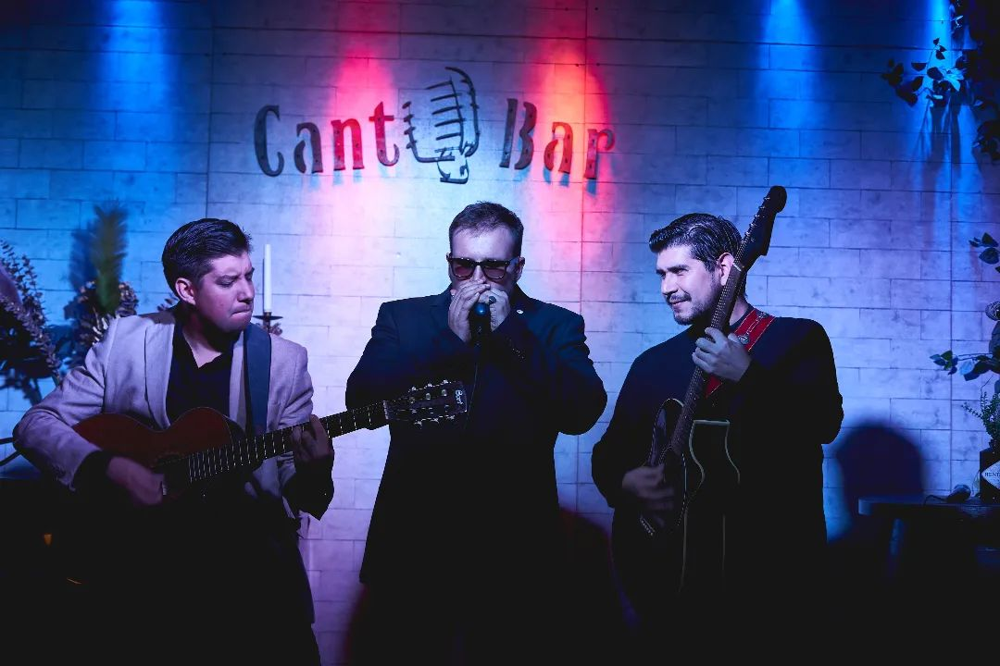
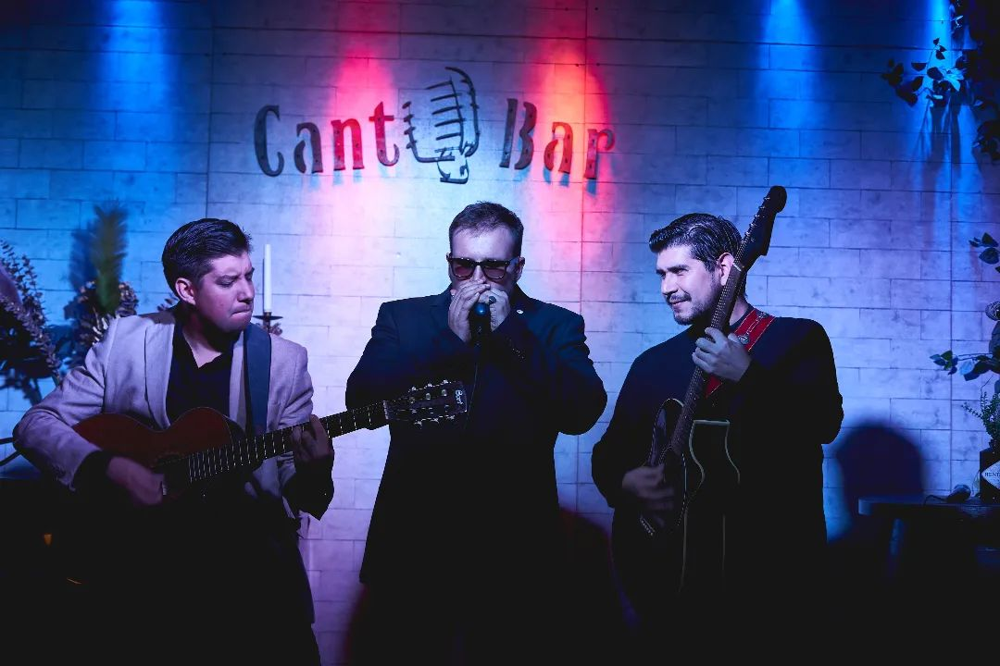
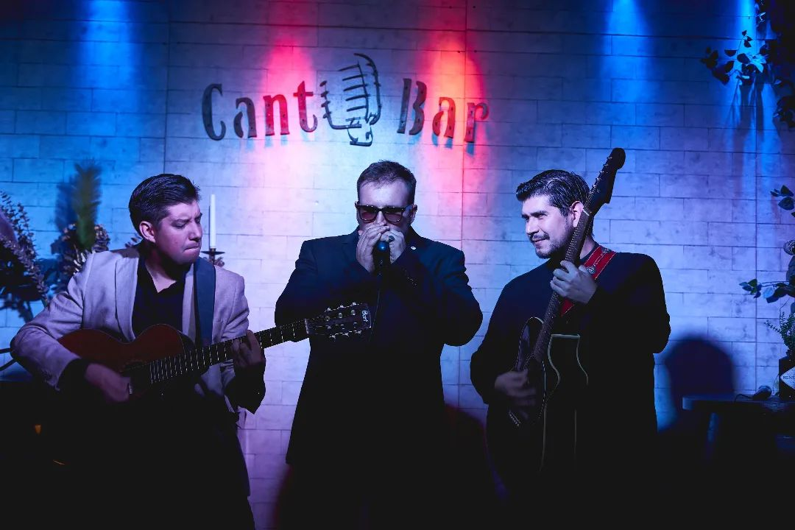
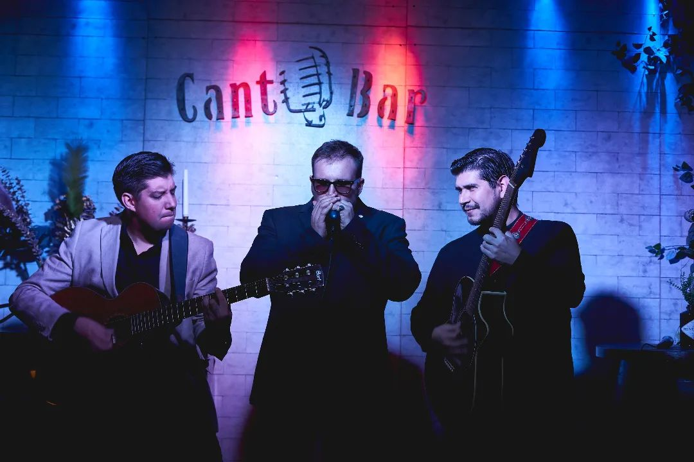

Tren de Medianoche surge en 2017 como un proyecto musical enfocado en la composición original y la improvisación, con una propuesta sonora basada principalmente en instrumentos electroacústicos. Sus canciones, escritas íntegramente en español, exploran emociones, experiencias y relatos que conectan al ser humano con su entorno social y la vida cotidiana.
La banda está integrada por Manuel Mercado (guitarra y voz), Ricardo Mizraji (armónica, teclado y coros) y José Antil (guitarra, armónica y coros).
En agosto de 2017 realizan su debut en vivo junto a destacados músicos de la escena nacional, participando en un festival en conmemoración del Día Internacional del Blues. Desde entonces, Tren de Medianoche ha recorrido diversos escenarios, festivales, eventos culturales y bares, consolidándose como una banda emergente dentro del blues nacional y logrando posicionarse tras el período de emergencia sanitaria, siendo incluida en distintas listas de reproducción del género.
Durante 2018 graban su primer EP “Arriba de la Locomotora” en Audiocustom Estudio bajo la producción de Cristian Olivares. Ese mismo año lanzan el single navideño “Santa se Llevó a Mi Chica”.
En 2021 publican su segundo EP “Desde la Otra Ruta”, producido por Johnny Espina, y el single “Mi Mejor Regalo”, grabado en Estudio Sol bajo la producción de Rodrigo Briceño, con la participación de Nehemías Muñoz en saxofón.
A fines de 2022 presentan “Mi padrino es un bohemio”, primer adelanto de su álbum debut. En abril de 2023 lanzan “Aullando a la Luna”, con la colaboración de César Díaz Bilbao en batería.
Durante la segunda mitad de 2023 estrenan “Cuatro Patitas”, una canción que relata la historia de adopción de una mascota y su visión del mundo junto a su dueño. Ese mismo año publican “Carta a mis amigos”, dedicada a la memoria de Héctor “Parquímetro” Briceño, con la colaboración de Marcelo Pizarro en batería.
Sientes Cómo